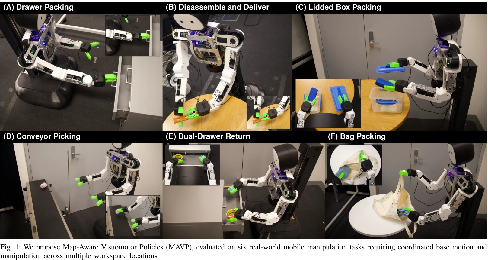
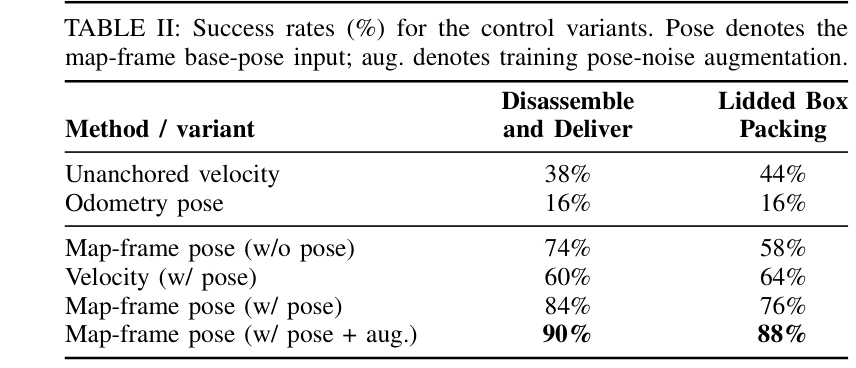
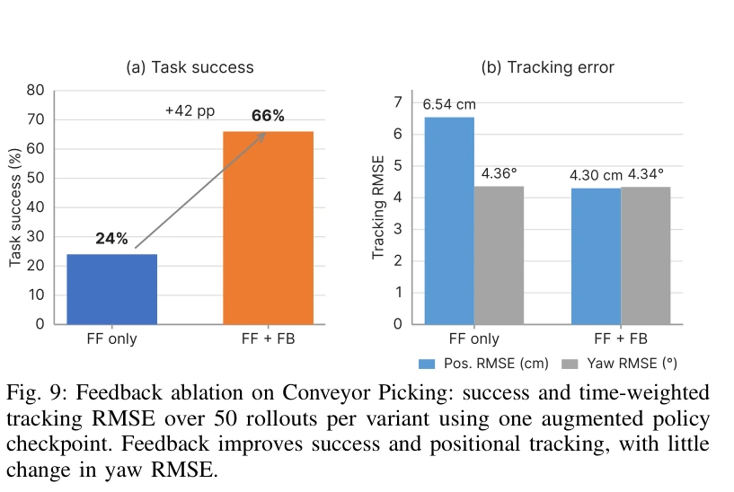
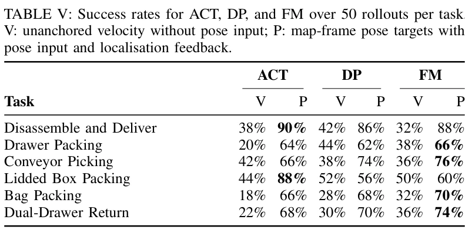

01
Drawer Packing
Pick up the eraser, open the drawer, place the eraser and two toys inside, and close it.
Robot learning Mobile manipulation
1School of Computer Science and 2Australian Center for Robotics, The University of Sydney, Australia
3College of Connected Computing, Vanderbilt University, TN, USA
†Equal contribution · *Corresponding author: Weiming.Zhi@sydney.edu.au
MAVP learns explicit base-pose targets in a shared map frame and tracks them with localisation feedback, helping a mobile robot reach the right place for manipulation.

Overview
Demonstrations can disagree about where the base should go when their motion is expressed only as local velocity. MAVP reconstructs a static map from demonstrations, uses that map to align base poses, and predicts pose targets alongside arm and gripper actions.
Method
The overview below is reproduced directly from Figure 2 of the paper.

Experiment videos
Each clip shows a task rollout. Footage is accelerated for viewing; people visible in the original recordings have been masked or removed from these edits. All six clips use an original instrumental MAVP soundtrack.
Pick up the eraser, open the drawer, place the eraser and two toys inside, and close it.
Remove the peg, travel to the box, and place all parts inside.
Approach and open the box, place an object inside, and close the lid.
Track and grasp an object moving on the conveyor.
Return two objects to their corresponding drawers.
Take a bag from the rack, pack the table objects, and hang the bag back.
Experimental results
The tables and plot below are direct crops of the paper. Each evaluated policy received 50 rollouts per task.


